8 Swan River Inputs
8.1 Overview
The dynamics of the Swan-Canning Estuary (SCE) has an impact on Perth coastal waters, and resolving these dynamics is an important focus of the CSIEM model setup. The flows from the estuary into the coast vary considerably, both throughout the year, and also from year-to-year. They can have a considerable impact on water salinity, vertical mixing, water nutrient concentrations, and the benthic light-climate experienced within the CS and OA regions.
During high catchment flow years, the amounts of water exiting Fremantle into the ocean are considerable. Depending on the direction of winds and prevailing currents at the time of peak discharge, the SCE plume will travel with a northward or southward tendency. In particular, when the flow travels southward, the river plume can extend all the way to the north of Cockburn Sound, and, sometimes, the plume can extend across the full extent of the Sound, as occurred in 2021 (Figure 8.1; see also Section 7.5). The plume extent may also be sensitive to the specific tidal regime or any sea-level anomaly occurring at the time of the peak river discharge.
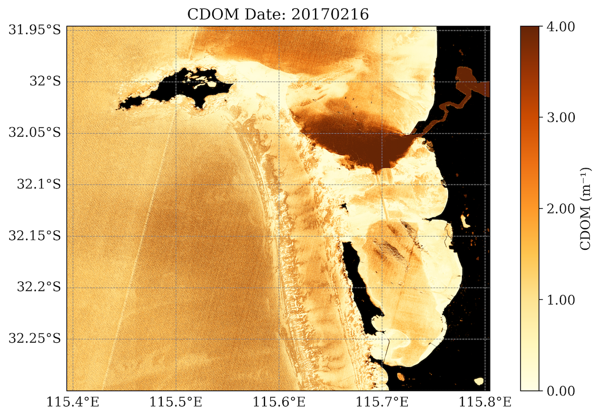
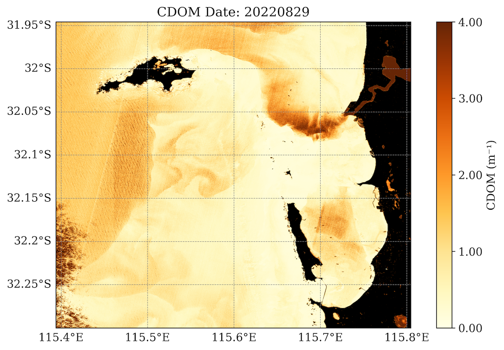
Figure 8.1. Satellite imagery of CDOM coloured water exiting Fremantle, representing the SCE river plume, for three different dates. Imagery from the Sentinel-2 platform. Taken from (csiemdash-leaflet.seaf.org.au)[https://csiemdash-leaflet.seaf.org.au]; follow this link for further images and image processing details.
Water flows into the SCE have been monitored since the 1970’s and catchment nutrient contributions have been monitored since the 1990’s. These data-sets provide important context for the interannual variability in flows and nutrient concentrations, and insights into long-term changes brought about by the climate drying-trend and catchment management. The water and nutrients entering the SCE are a blend of water from the large Avon catchment and the Swan Coastal Plain catchments, and each of these systems has a different response to rainfall and the different land management and nutrient export signatures.
Overall, there are 30 main reporting catchments that enter the SCE, plus the Avon. Not all the catchments entering the systems are gauged and so catchment modelling has also previously been relied upon to understand the total flow and nutrient contributions into the system. In addition, the estuary itself is an important filter of nutrient loads, and able to process and assimilate some of the raw catchment inputs before they enter the ocean plume. The prior development of the Swan-Canning Estuarine Response Model (SCERM) has been undertaken for a range of years, and well calibrated for the system (Huang et al., 2019), in particular to capture the seasonal salt-wedge dynamics, hypoxia and nutrient recycling. This model however did not resolve the ocean extent of the SCE river plume, and focused on areas upstream of Blackwall Reach.
The aim of this chapter to is to described the setup and rationale of the SCE sub-domain within CSIEM, and to undertake detailed analysis the results to ascertain the catchment nutrient loads that make it from the SCE into the CSOA region. This provides important contextual information for understanding the nutrient dynamics and nutrient budget of Cockburn Sound, and serves as a foundation to help understand the relative scale of any local impacts that are being assessed. The CSIEM domain includes the dynamics of the Lower Swan-Canning estuary, west of the Narrows Bridge, and north of the Canning Hwy Bridge.
8.2 Interannual variability in catchment discharge volumes and nutrient export loads
Integrated modelling of the Swan–Canning system has shown that interannual variability in freshwater discharge and nutrient export to the estuary is dominated by hydroclimatic forcing, with strong contrasts between wet and dry years, which is superimposed on a long-term drying trend. Simulations using the Swan Canning Catchment Model (SCCM) and Avon catchment model by Paraska et al. (2022) provides the most recent estimate of the total annual flows and associated nutrient loads. The model shows that they vary by factors of several between years, with discharge magnitude being the primary control on total nitrogen (TN) and total phosphorus (TP) export.
The Avon River catchment is a dominant driver of the interannual variability experienced within the system. In wet years, when the Avon catchment is activated, this water source dominates total inflow to the estuary and accounts for the majority of nitrogen and phsophorus loads; this is a reflection of its large catchment area. In contrast, during dry years, Avon flows are greatly reduced or episodic, and the Swan Coastal Plain catchments contribute a larger proportion of total inflow and nutrient loads despite lower absolute volumes overall.
8.2.1 Guaged vs un-guaged flows
The SCE has 44 discrete input points from the surrounding catchment (Figure 8.2). Many of these inflows represent small urban stormwater catchments that contribute small flows over all. Of the 44, there are 8 main guaged catchments (Figure 8.3), which have long-term flow and nutrient monitoring; these 8 contribute approximately 80% of the total flow into the system on average, and even more durin ghigh Avon flow years.
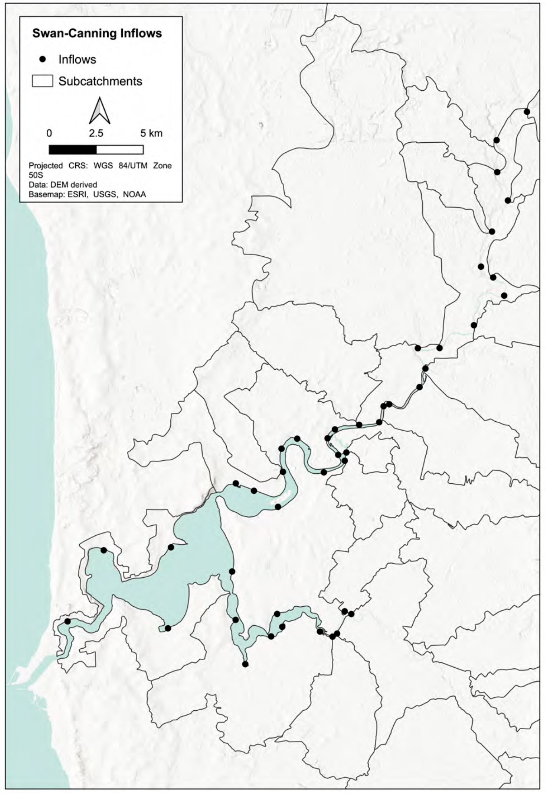
Figure 8.2. Entry points of the Swan Coastal Plain catchments into the Swan-Canning Estuary (taken from Paraska et al., 2022). Of these 44 discrete inputs, the 8 major inflows are gauged.
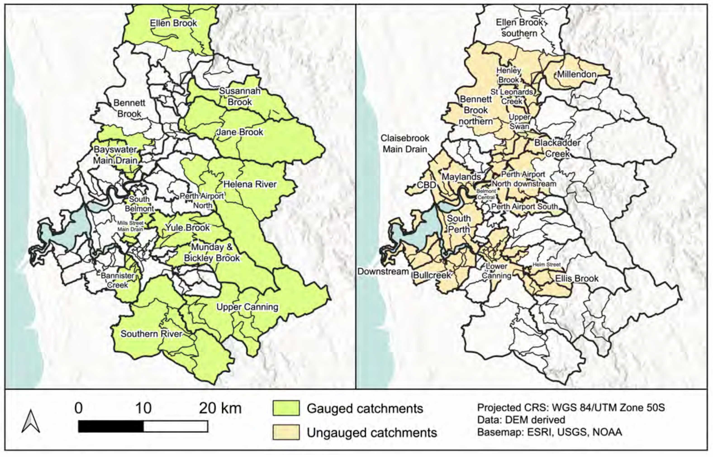
Figure 8.3. Comparison of the gauged (monitored) catchment areas and the ungauged catchment areas contributing water into the SCE.
8.2.2 Nutrient load changes over time
The analysis further shows that apparent long-term reductions in nutrient export since earlier modelling studies arise from a combination of management interventions and reduced discharge volumes associated with climate drying, rather than consistent reductions in flow-weighted nutrient concentrations. As a result, year-to-year comparisons of nutrient loads can obscure management signals, particularly when wet and dry years are compared directly.
Interannual variability also affects the seasonal timing of nutrient delivery, with wet years characterised by strong winter nutrient pulses and enhanced estuarine flushing, while dry years exhibit lower loads but reduced dilution capacity. These findings highlight the need to assess nutrient export and downstream water quality response over multi-year periods that explicitly account for this hydrologic variability.
8.4 River contribution to Cockburn Sound
River tracers used within CSIEM have been analysed to understand the river mass flux into (and out of) Cockburn Sound. A river tracer serves as a virtual dye in the water that allows water that has entered from a particular source to be tracked once it moves through the domain, subject to currents and dilution. For this analysis, the 6 focus validation years were run with the SCE inflows entering at the Narrows and Canning, and in addition to the water and nutrient amounts as shown in the previous section, a river tracer with a concentration of 1 g/m3 was added. This value is similar to the mean Total Nitrogen (TN) concentrations in the centre fo the estuary, and conceptually the tracer can be though of a conservative (non-reactive) load of mass entering the domain. Additionally, the model then includes a set of “flux node-strings”, which are transects across certain areas of interest in the domain, where detailed accounts of water, tracer and nutrient flows are tracked. In the default CSEIM setup, node-strings are included int he underlying TUFLOW-FV hydrodynamic model at key locations including the Fremantle Port, across the north face of Cockburn Sound (Woodman Point to the north tip of Garden Island), across the south entrance into Cockburn Sound (following the causeway bridge) and along the edge of the Kwinana Shelf. In this setup, the fluxes through these key transects are summed to compute a weekly total.
The results show that the seasonal pulse of material of river origin entering the Sound during winter conditions, and this is highly variable depending on the river flow magnitude in any given year (Figure 8.X). For each year the results show the seasonal reversal of the mean flow into the sound (integrated across all vertical depths), is predominant northward from October to March (blue squares in panel (a)) and Southward from April to September (red squares in panel (a)), though with some week-to-week variability in this broad trend noticeable. The bottom panel of each plot, shows the amount of river tracer
2013
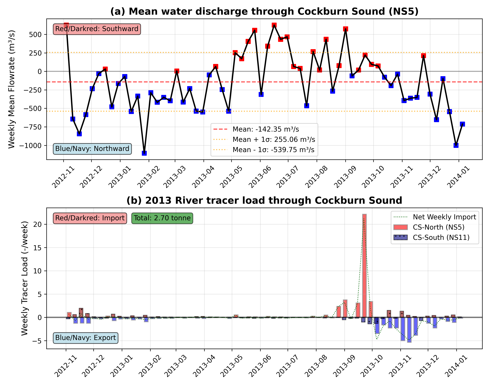
Figure 8.23-i. River tracer throughflow analysis for the simulated year 2013, showing (a) net water exchange through the CS-North transect, and (b) the weekly “river tracer load” moving through CS-North and South, for a river constituent entering the SCE with a hypothetical concentration of 1 /m3.
2015
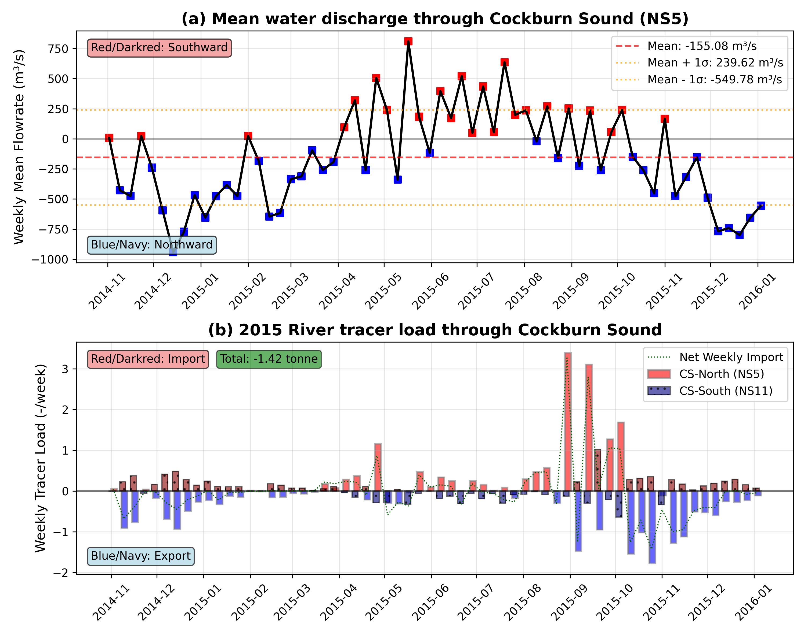
Figure 8.23-ii. River tracer throughflow analysis for the simulated year 2015, showing (a) net water exchange through the CS-North transect, and (b) the weekly “river tracer load” moving through CS-North and South, for a river constituent entering the SCE with a hypothetical concentration of 1 /m3.
2020
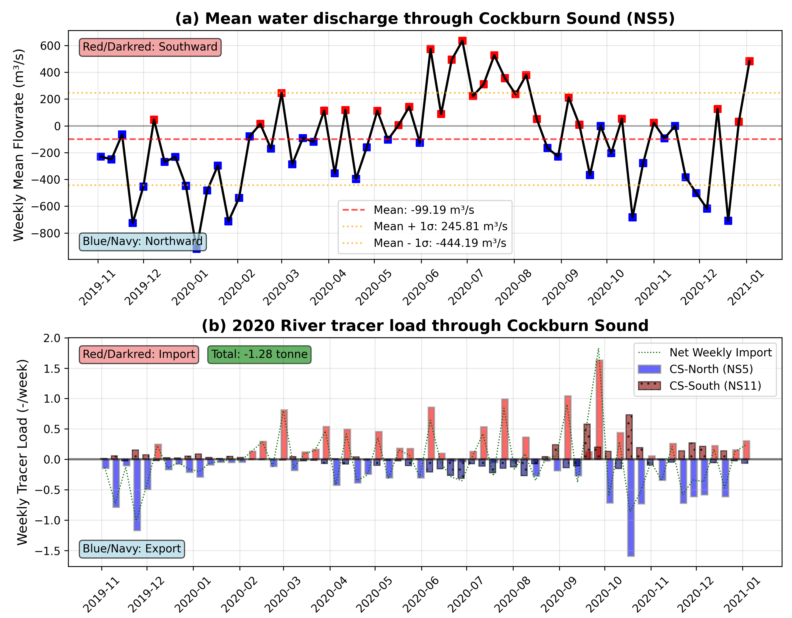
Figure 8.23-iii. River tracer throughflow analysis for the simulated year 2020, showing (a) net water exchange through the CS-North transect, and (b) the weekly “river tracer load” moving through CS-North and South, for a river constituent entering the SCE with a hypothetical concentration of 1 /m3.
2021
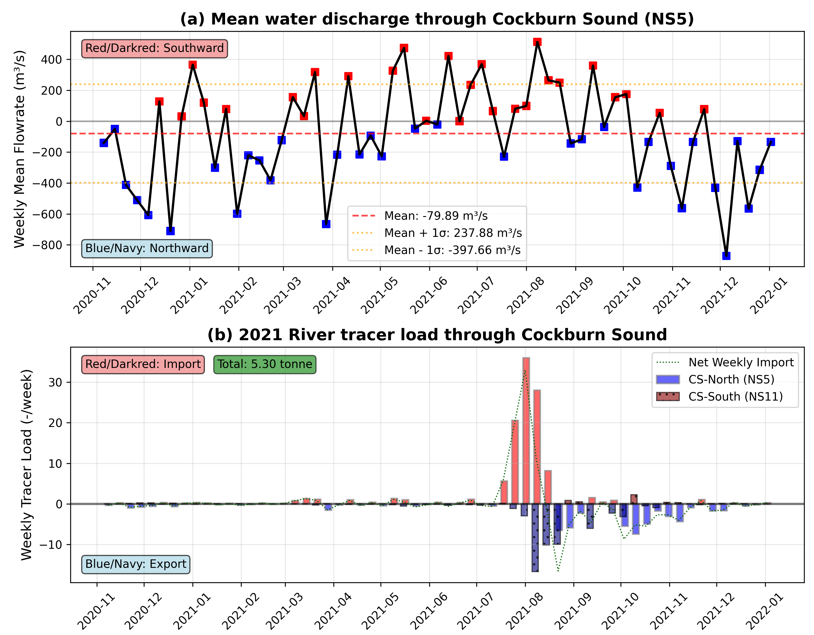
Figure 8.23-iv. River tracer throughflow analysis for the simulated year 2021, showing (a) net water exchange through the CS-North transect, and (b) the weekly “river tracer load” moving through CS-North and South, for a river constituent entering the SCE with a hypothetical concentration of 1 /m3.
2022
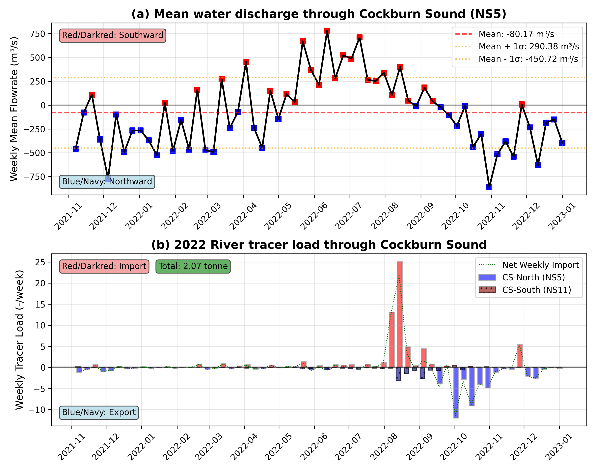
Figure 8.23-v. River tracer throughflow analysis for the simulated year 2022, showing (a) net water exchange through the CS-North transect, and (b) the weekly “river tracer load” moving through CS-North and South, for a river constituent entering the SCE with a hypothetical concentration of 1 /m3.
2023/4
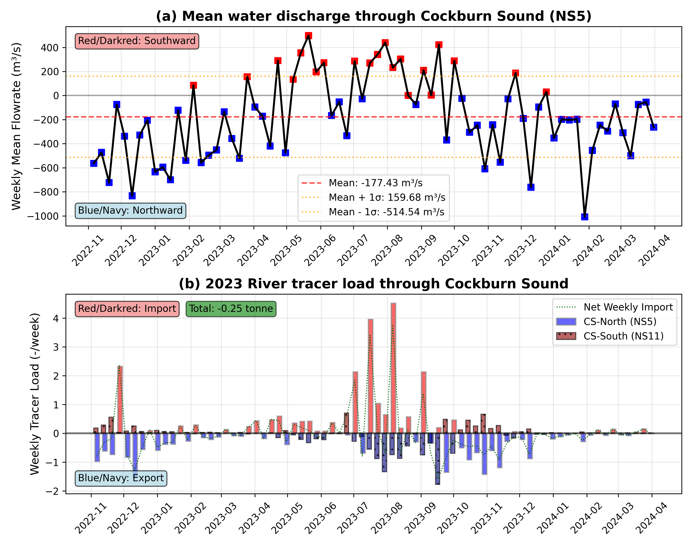
Figure 8.23-vi. River tracer throughflow analysis for the simulated year 2023/4, showing (a) net water exchange through the CS-North transect, and (b) the weekly “river tracer load” moving through CS-North and South, for a river constituent entering the SCE with a hypothetical concentration of 1 /m3.
8.5 River nutrient exports through Fremantle
In the previous section, the tracer is used as an indicator of SCE nutrients to show the timing and relative magnitude of nutrients making it to Cockburn Sound. In this section, we use the modelled flow and nutrient concentrations to compute the actual nitrogen load, and consider the form of nitrogen also. This is first computed for the water existing SCE through the Fremantle port, and then following on from the river tracer analysis, it is possible to also adapt this approach to compute the amount of river-derived nutrients leaving Fremantle that make their way into the main Cockburn Sound embayment (through the Woodman Point to Garden Island transect).
The analysis in Figure 8.X shows the total load existing Fremantle into the ocean, and a separate plot of the bio-available nitrogen fraction (DIN = NO3 + NH4). Based on the rate of river tracer dilution, an estimate of N from river origin is also made for each year in the bottom panel.
2013
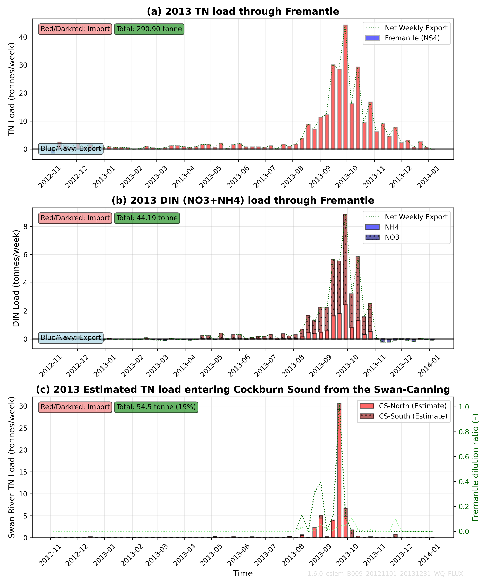
Figure 8.23-i. SCE river plume nitrogen load analysis for the simulated year 2013, showing (a) the total weekly nitrogen load exiting Fremantle Port, (b) the weekly bio-available fraction of TN leaving Fremantle, and (c) an estimate load of the weekly N tonnes entering Cockburn Sound from the SCE catchments.
2015
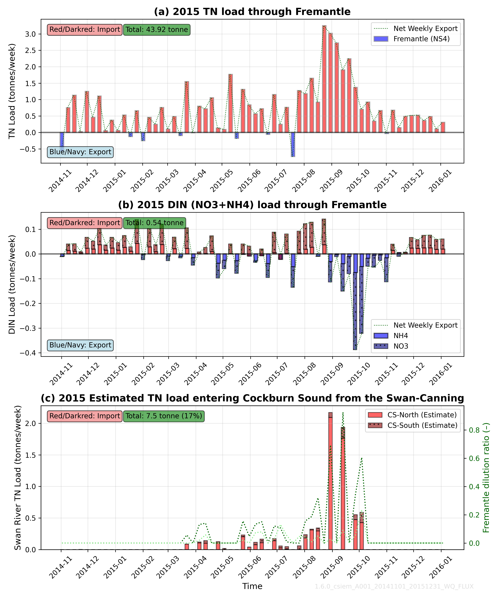
Figure 8.23-ii. SCE river plume nitrogen load analysis for the simulated year 2015, showing (a) the total weekly nitrogen load exiting Fremantle Port, (b) the weekly bio-available fraction of TN leaving Fremantle, and (c) an estimate load of the weekly N tonnes entering Cockburn Sound from the SCE catchments.
2020
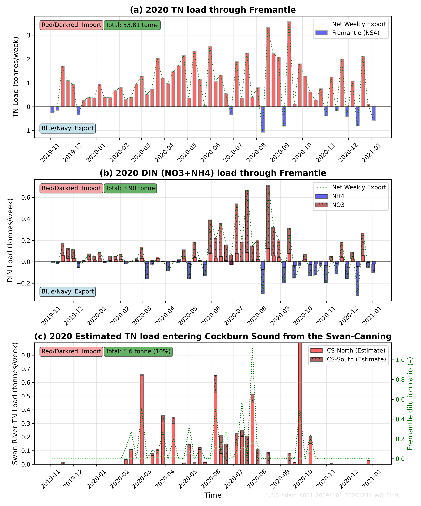
Figure 8.23-iii. SCE river plume nitrogen load analysis for the simulated year 2020, showing (a) the total weekly nitrogen load exiting Fremantle Port, (b) the weekly bio-available fraction of TN leaving Fremantle, and (c) an estimate load of the weekly N tonnes entering Cockburn Sound from the SCE catchments.
2021
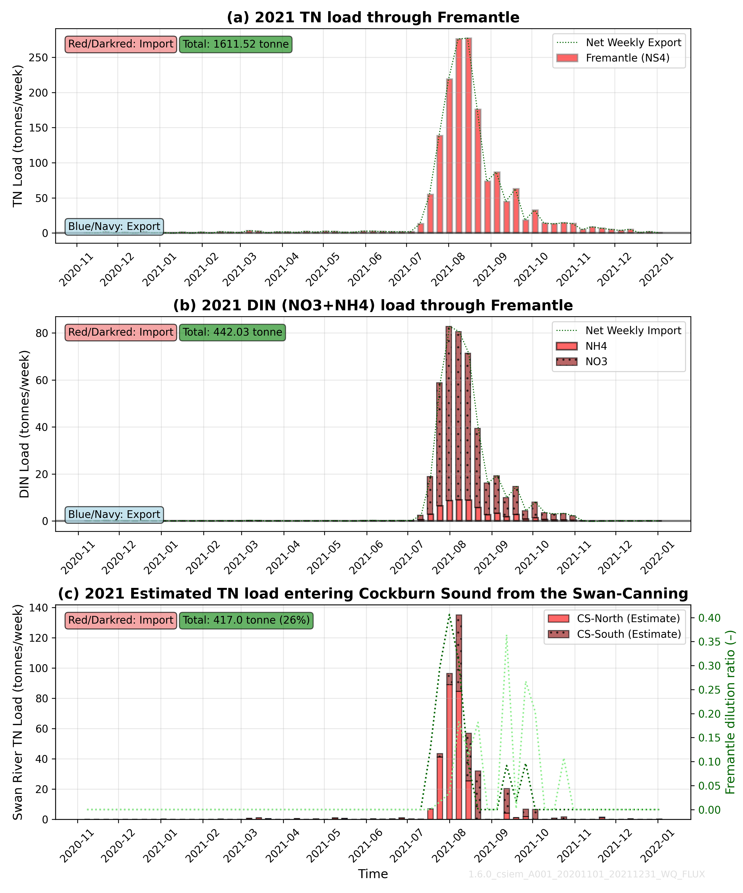
Figure 8.23-iv. SCE river plume nitrogen load analysis for the simulated year 2021, showing (a) the total weekly nitrogen load exiting Fremantle Port, (b) the weekly bio-available fraction of TN leaving Fremantle, and (c) an estimate load of the weekly N tonnes entering Cockburn Sound from the SCE catchments.
2022
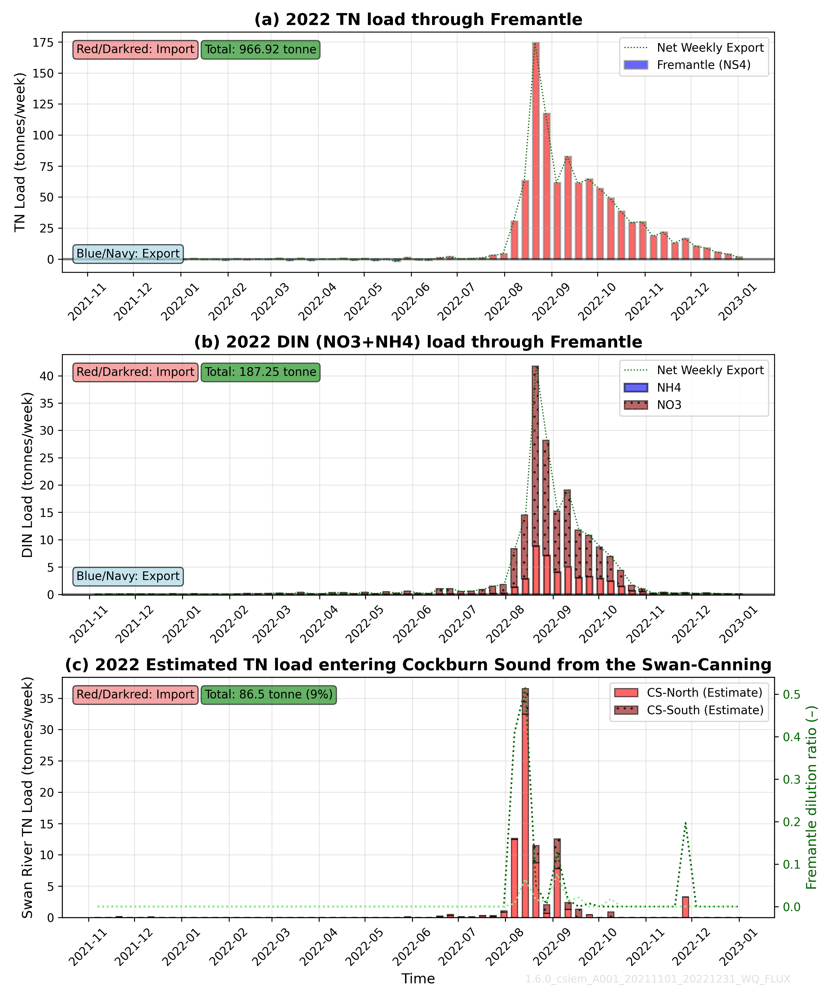
Figure 8.23-v. SCE river plume nitrogen load analysis for the simulated year 2022, showing (a) the total weekly nitrogen load exiting Fremantle Port, (b) the weekly bio-available fraction of TN leaving Fremantle, and (c) an estimate load of the weekly N tonnes entering Cockburn Sound from the SCE catchments.
2023/4
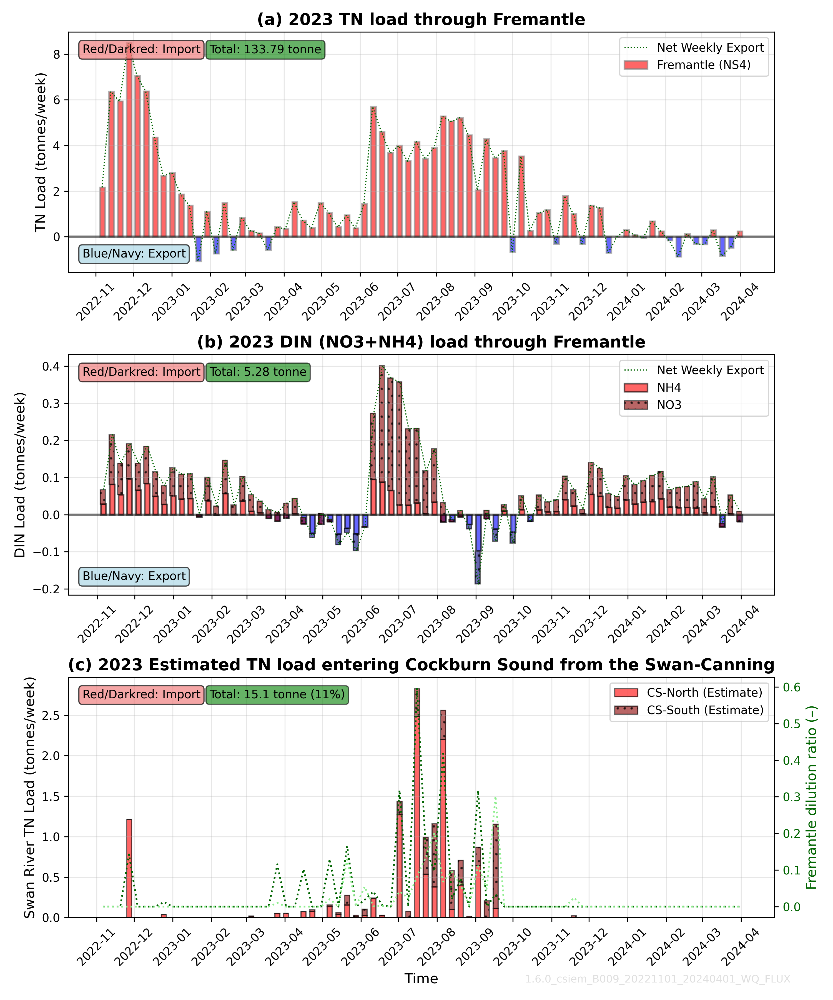
Figure 8.23-vi. SCE river plume nitrogen load analysis for the simulated year 2023/4, showing (a) the total weekly nitrogen load exiting Fremantle Port, (b) the weekly bio-available fraction of TN leaving Fremantle, and (c) an estimate load of the weekly N tonnes entering Cockburn Sound from the SCE catchments.